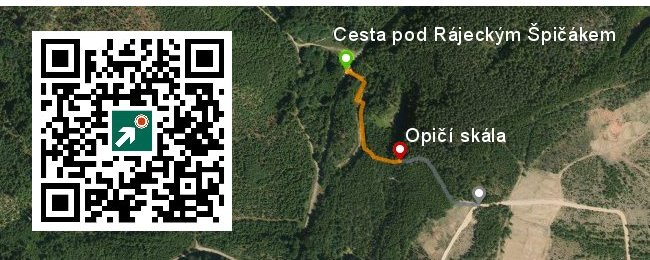
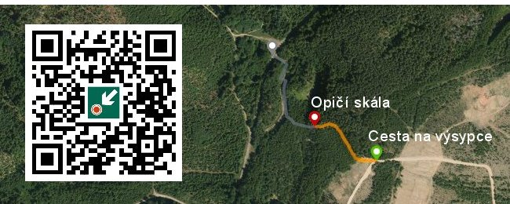

Moje trasy k Opičí skále
Soubor zdola.gpx s trasou, kterou chodím já,jdu-li k Opičí skále zdola od cesty pod Rájeckým Špičákem

Soubor shora.gpx s trasou, kterou chodím já,jdu-li k Opičí skále shora od cesty na Smolnické výsypce.
